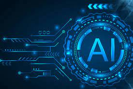

Artificial Intelligents(AI) is the branch of computer science that emphasizes the devolopment of intelligence machine , thinking and working like humans for example ,speech recognition problem solving , learning and planning.
Virtual Reality is a computer generated enviroment with scenes and objects that appear to be real , making the user feel they are immeresed in thier surrounding . This enviroment is perceived through a device known as a Virtual Reality headset or helmet..
Robotics is an interdisciplinary sector of science and engineering dedicated to the design, construction and use of mechanical robots. Our guide will give you a concrete grasp of robotics, including different types of robots and how they're being applied across industries.
The Internet of Things describes physical objects with sensors, processing ability, software, and other technologies that connect and exchange data with other devices and systems over the Internet or other communications networks.